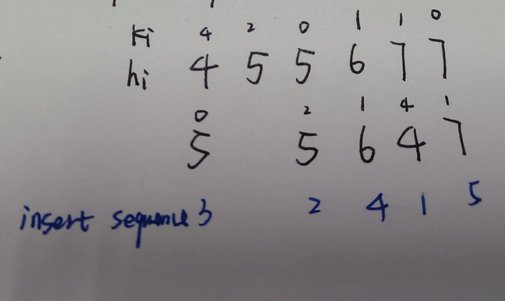

Greedy Algorithm
An algorithm that tries to derive the global optimum from local optimums. If you can't find a counter-example for the derivation, the greedy algorithm can come in handy.
A simpler choice than dp.
It usually has time complexity and space complexity.
In total
Tips
- Like problem 45, update the end condition for one step during iteration.
- The changes of the summary can also be used to judge.
- Traversing twice is a easy way to process sequences with ascending and descending.
Problems
List
Update the maxisum during iteration.
Clear the current sum once it becomes negative. -> negative numbers are burdens for sum.
- We need to first update the maxans in case of the max sum is negative(all nums are negative)

A jump step: start point -> end point.
Update the step only after all the possible end points(eg: the blue circle) can't reach the end of the list.
Use a curend to judge whether the current step reaches the maximum.
Solution with one traversal:
- record the sum of difference between
gas[i]andcost[i](prefix). If the sum becomes smaller, that means the following total cost is greater than gas, update the start point and the min number of sum. - If the sum of differences >= 0, the solution exists.
general solution: For problems that have peaks and valleys, we can traverse twice(from left to right and from right to left) to process the ascending sequences. ->
In this problem, is also possible if analyze comprehensively.
- We need to process the special case that the ascending subsequence has the same length with the descending sequence.

We can sort the person by height, and insert each person according to the . Specifically, as person i can ignore the people shorter than him, he can inserted into the position that has vacancies for the higher people. For people have the same height, the one with greater should reserve specific vacancies for the ones with smaller , which means he is theoretically shorter than others with the same height.
Method: choose the interval that ends small, so that more intervals later can be chosen. -> sort by .
Tree
DP problem. Can be optimized with greedy algorithm.
Greedy strategy:
Start from the bottom. Make sure all leaves don't have camera. -> PostOrder
(If starting from the top, we can only make sure the root(only one node) doesn't have camera.)
Status:
The status are calculated during the PostOrderTraversal.
0: nodes that are not covered by camera.
1: nodes that are covered, but don't have camera.
- That means some or one of their sons would have camera. Not father because we haven't reach to the father yet.
2: nodes that have camera.
Conditions:
- Null node -> status 1
- Leaves -> status 0
- Nodes that have status 0 as son -> status 2
- Nodes that have status 2 as son -> status 1
- Nodes of other conditions -> status 0